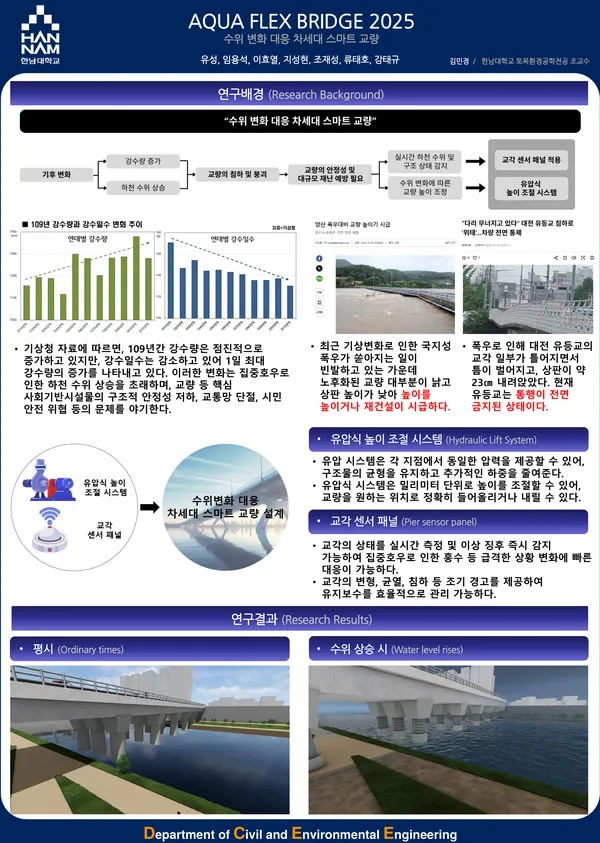
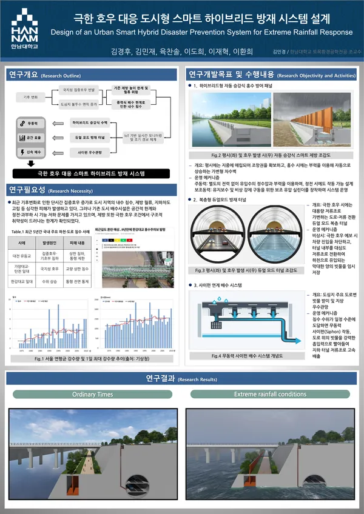

Capstone Design Award
Back-to-back
1st place.
한남대학교 건설환경공학과
캡스톤디자인 2년 연속 1위
Department of Civil and Environmental Engineering, HANNAM UNIVERSITY
Advised by Prof. Min Kyoung KIM
-

1st 2024 AQUA FLEX BRIDGE 수위 변화 대응 차세대 스마트 교량 -

1st 2025 Urban Smart Hybrid Disaster Prevention System 극한 호우 대응 도시형 스마트 하이브리드 방재 시스템 - ? 2026 Your team next. 다음 1위는 여러분의 차례